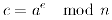
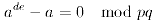

Die Daten in dem aktiven Dokument werden über den Dialog RSA-Verschlüsselung mit dem RSA-Verfahren verschlüsselt.
Im Kapitel Szenarien gibt es ein Szenario für die Ver- und Entschlüsselung mittels RSA-Verfahren.
Das bekannteste asymmetrische Chiffrierverfahren wurde 1977 von Ronald Rivest, Adi Shamir und Leonard Adleman entwickelt, der RSA-Algorithmus. Der private und der öffentliche Schlüssel werden durch zwei frei gewählte, aber geheim zu haltende große Primzahlen p und q konstruiert. Man wählt zwei natürliche Zahlen e und d so, dass gilt:
Das Produkt n=p×q und e dienen dann als öffentlicher Schlüssel, n und d als privater Schlüssel. Auch für diese Verschlüsselungsmethode müssen die Klartextbuchstaben erst in Zahlen übertragen werden. Dies geschieht in der Regel mit dem ASCII-Code, man kann aber natürlich auch wieder A=0, B=1, ... , Z=25 vereinbaren. Es muss allerdings die Nummer jedes Klartextbuchstabens kleiner sein als das Produkt n. Dies wird deutlich, wenn man sich die Ver- und Entschlüsselungsfunktionen ansieht (a: Klartextbuchstabe, c: Geheimtextbuchstabe):
 |
Da man bei der modulo-Division auch zuerst von jedem Faktor den Rest bei der Division modulo n bestimmen kann und danach den Rest ihres Produktes modulo n, würde sich nicht immer ein eindeutiges Geheimtextzeichen ergeben können, wenn a größer als n sein darf.
Kryptographisch wichtig ist
Die erste Frage ist ganz klar mit 'Ja' zu beantworten. Setzt man in die Entschlüsselungsfunktion für c a^d mod n ein, erhält man:

Aus den Eigenschaften der Variablen ergibt sich a^(d×e) - a mod p = 0 und a^(d×e) - a mod q = 0. Die verschiedenen Primzahlen p und q teilen also dieselbe Zahl. Deshalb muss auch ihr Produkt diese Zahl teilen. Es folgt also (ein ausführlicher Beweis befindet sich im Skript):

Die zweite Frage, ob der private Schlüssel durch den öffentlichen Schlüssel berechnet werden kann, ist theoretisch auch mit 'Ja' zu beantworten. Tatsächlich ist es aber noch niemandem gelungen, den privaten Schlüssel bei genügend großen p und q zu errechnen. Das Verfahren dafür ist allerdings bekannt: Da n das Produkt zweier Primzahlen ist, und e und d direkt von diesen beiden Primzahlen abhängen, müsste es also genügen, die beiden Primzahlen herauszufinden, indem man n in seine Primfaktoren, nämlich p und q zerlegt. Der normale Weg, die Primfaktoren herauszufinden, ist, alle Primzahlen von 2 bis zur Quadratwurzel aus n daraufhin zu überprüfen, ob sie n teilen oder nicht. Da aber n mindestens 300 Stellen groß sein sollte, ist dies eine sehr zeitaufwendige Methode. An der Faktorisierung einer 129-stelligen Zahl arbeiteten 1994 600 Menschen (bzw. deren Computer) acht Monate lang! Die Rechenzeit für die Faktorisierung einer 160-stelligen Zahl wurde 1996 auf fünf Jahre geschätzt. Man kann sagen, dass jeder der beiden Schlüssel für sich betrachtet eine Einwegfunktion darstellt (eine Einwegfunktion ist eine mathematische Funktion, die einfach, das heißt ohne großen Aufwand zu berechnen ist, deren Inverses zu berechnen jedoch extrem schwierig ist).
Wird jeder Buchstabe einzeln mit dem RSA-Algorithmus verschlüsselt, wäre die Analyse letztendlich genau so, wie bei jeder monoalphabetischen Substitutions-Chiffre. Man müsste noch nicht einmal d herausfinden, um für jede Zahl den ursprünglichen Klartextbuchstaben zu ermitteln. Da n aber sehr groß ist, können viele Buchstaben auf einmal zusammengefasst zu Blöcken chiffriert werden. Dadurch wird es immer schwieriger, den privaten Schlüssel zu errechnen. Um eine Analyse so schwer wie möglich zu gestalten, sollten die Variablen d, p und q, sowie die Differenz p - q genügend groß gewählt werden.
Da der RSA-Algorithmus für die Ver- oder Entschlüsselung eines Textes relativ viel Zeit benötigt, setzt man ihn heute meist nur dazu ein, den Schlüssel einer (symmetrischen) Chiffre beim Austausch oder eine digitale Signatur zu verschlüsseln. Für den Schlüsselaustausch muss mit dem öffentlichen, eine digitale Signatur muss mit dem privaten Schlüssel chiffriert werden.